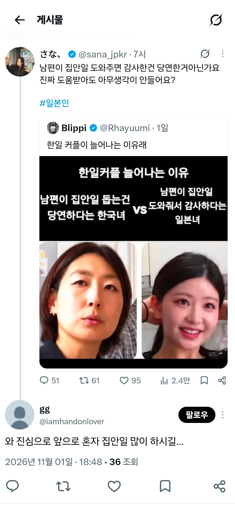
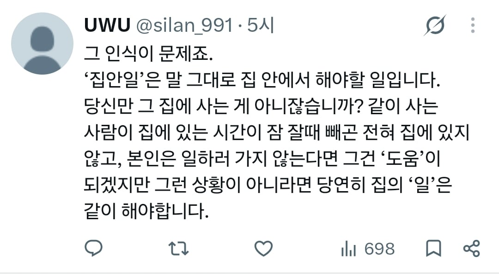
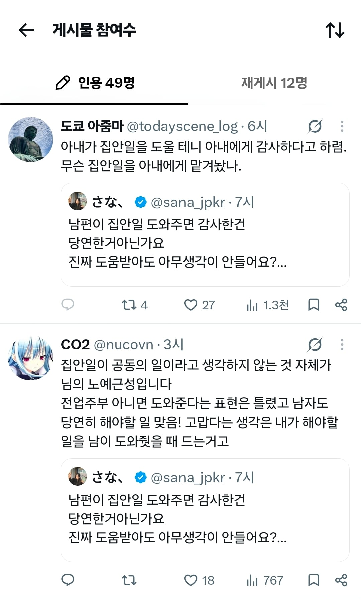
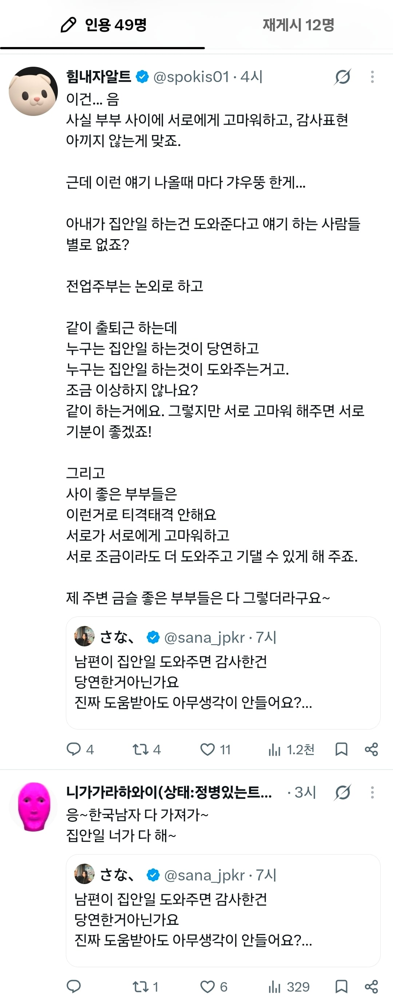
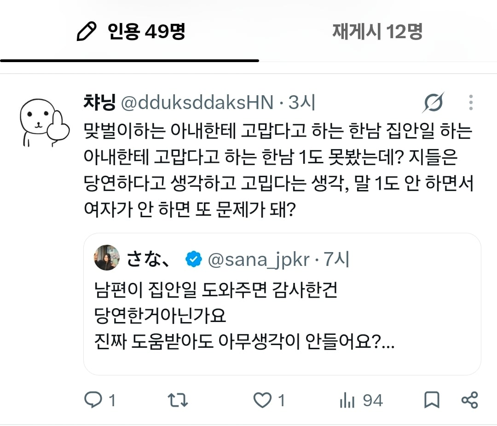
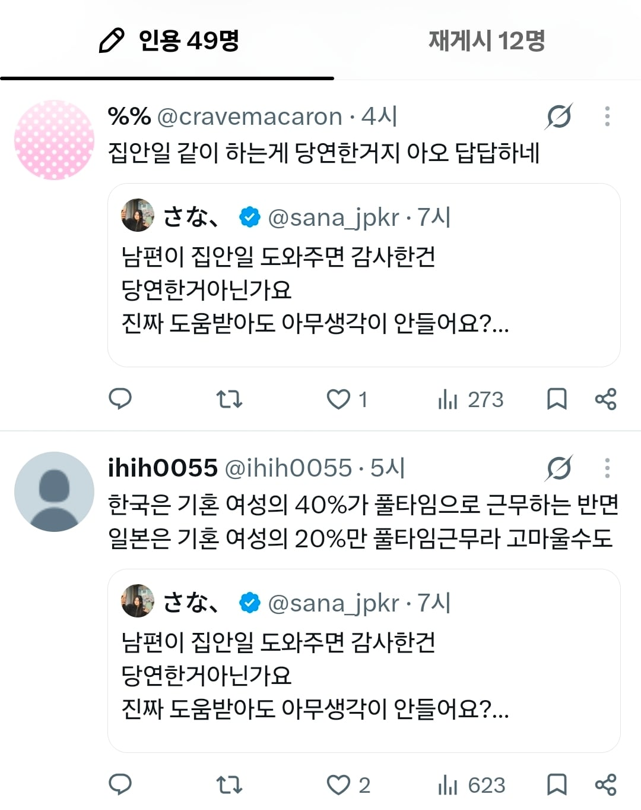

죄다 무직 못혼에 집안일도 해본적 없는부모등골 파먹는 애들 ㅋㅋㅋ
맞벌이면 같이하는거고
혼자벌면 상대방쪽 도와준다는 표현이 맞는듯
한가지 맞벌이에대해 언급하자면 일본은 맞벌이를 해도 보통 파트타임잡이 많음. 또 세금문제때문에 흔히 말하는 일년 100만엔 까지만 버는 경우도 많고.
즉 관점이 다른건데 한국의 맞벌이는 사실상 둘다 풀타임잡인 경우를 말하고 일본의 맞벌이는 여자쪽이 하루에 3-4시간 주에 3-4일 정도 알바하는정도임. 그러니까 일본은 맞벌이를 해도 '웬만하면' 여자가 집안일 다 해야하는거고 남자가 도와주면 고맙다는 인식이 있는거 (사실상 전업주부니까)
즉 한국일본 둘다 전업주부라는 가정하 이야기 해야하는건데 그렇다 쳐도 좀 한국이 반응 표독하긴해 ;;
해줘 사줘 아몰랑 오또캐 4대 패시브 씹련들
서로서로 감사해야지 뭐하나라도 니가 당연히 해야지 그걸가지고 생색이야 이지랄 떠는 사람이랑은 아무도 살고 싶지 않음
당연한것도 감사하는게 중요함
결혼식 주례사로 맨날 하는 말이 '서로 감사하며 살아라' 임. 남편도 아내가 집안일을 도와줘서 감사하다고 생각하고 있을테지만, 저 불쌍한 X녀들은 평생 이해하지 못할 말과 감정이지. 겪어 본 적 없는 감정은 공포와 배척이 우선이니까.
감사하다는 말을 노예가 된다 수준으로 알아쳐먹으니까 문제
도대체 이 표독한년들을 누가 데려갈까 ㅋㅋ
표독하다 표독해
부부라는게 서로서로 도와주고 협력하는 관계인데
어떻게든 위에 서 보겠다고 기싸움부터 할려고 어휴
저 중에 일하는년 한둘은 될까?